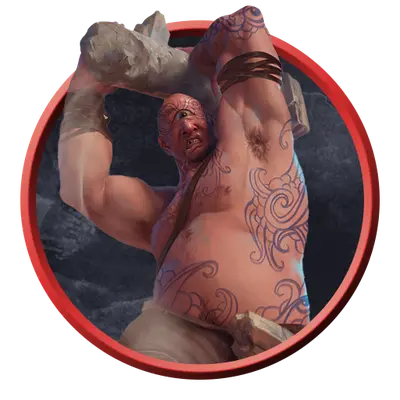

Циклоп дозорный
Cyclops Sentry
Огромный Великан, Хаотичный Нейтральный

Класс Защиты 14 Инициатива +0 (10)
Хиты 138 (12к12 + 60)
Скорость 40 футов
| мод | спас | ||
|---|---|---|---|
| СИЛ | 22 | +6 | +6 |
| ЛОВ | 11 | +0 | +0 |
| ТЕЛ | 20 | +5 | +5 |
| мод | спас | ||
|---|---|---|---|
| ИНТ | 8 | −1 | −1 |
| МДР | 6 | −2 | −2 |
| ХАР | 10 | +0 | +0 |
Чувства пассивное Восприятие 8
Языки Великаний
Опасность 6 (2 300 опыта; БВ +3)
Действия
Мультиатака. Циклоп совершает две атаки Каменной дубиной или Валуном в любой комбинации.
Каменная дубина. Бросок рукопашной атаки: +9, досягаемость 10 фт. Попадание: 16 (3к6 + 6) Дробящего урона. Если цель — существо Огромного размера или меньше, она становится Опрокинутой.
Валун. Бросок дальнобойной атаки: +9, дистанция 30/120 фт. Попадание: 22 (3к10 + 6) Дробящего урона.
Реакции
Ограниченное предвидение (Перезарядка 6). Условие: По циклопу совершает бросок атаки видимое им существо. Эффект: Этот бросок атаки совершается с Помехой, а циклоп получает Преимущество на броски атаки против цели до конца следующего хода циклопа.
Бонус мастерства +3
Среда обитания Горы, Луга, Прибрежье, Подземье, Пустыня, Холмы
Сокровища Оружейные
Циклопы
Одноглазые хранители предначертанного
Циклопы — исполинские одноглазые потомки богов. Обращаясь к своему мистическому взору, они способны прозревать, каким образом скорее всего развернутся грядущие события.
Большинство циклопов дозорных служат своим божественным прародителям и противостоят всякому, кто дерзнёт вмешаться в предначертания судьбы.